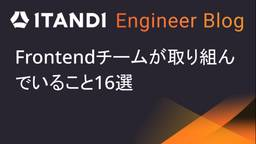
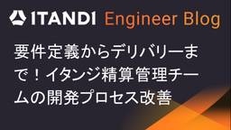

ITANDI Engineer Blog
https://tech.itandi.co.jp/
ITANDI Engineer Blog
フィード

Frontendチームが取り組んでいること16選
ITANDI Engineer Blog
はじめに こんにちは！Frontendチームの薄羽です。イタンジはRubyKaigiのスポンサーになるなど、Rubyに力を入れている会社だと思われていますが、実はフロントエンドも頑張っています！そこで、頑張りをみなさんに知ってもらうために、今回は「Frontendチームが取り組んでいること16選」を紹介します！ Frontendチームとは イタンジのFrontendチームにはエンジニアとデザイナーが所属しており、「プロダクトUIを横断的に見ること」を目的としています。エンジニアはプロダクトUIを構築するコードとそれを守るテスト自体の品質管理、デザイナーはUXも含めたプロダクトのデザインを頑張っ…
1日前

要件定義からデリバリーまで！イタンジ精算管理チームの開発プロセス改善
ITANDI Engineer Blog
はじめに こんにちは。多種多様なメンバーが集まる、いつも賑やかなイタンジ精算管理チームです。 私たちが日々開発しているのは、その名の通り 精算 を 管理 するシステムであり、 お金を扱うがゆえに、とても繊細で1ミリのズレも許されないプロダクトです。 品質を担保するのはもちろんのこと、ドメイン知識が複雑であるがゆえに、チーム内での漏れなく的確なコミュニケーションが求められます。 一方で、プロダクトの価値をさらに提供していくためには、開発スピードも上げていかなければならないというジレンマを日々抱えています。 品質も落とせない、でも早く開発してリリースしたい... しかし、人間だけではこの両方を追い…
3日前

PlaywrightでFlaky Testを減らすための実践知
ITANDI Engineer Blog
こんにちは、賃貸募集支援事業プロダクト開発チームの張(チョウ)です。普段は賃貸物件への申込みをWebで完結させるプロダクトの開発をしています。私たちのチームは昨年末からPlaywrightを導入し、E2Eテストの運用を開始しましたが、テスト数が増加するにつれて、どうしても避けて通れない「Flaky Test（不安定なテスト）」の問題に直面しました。 Flakyテストとは Google Testing Blog (2016) によると、Flaky Testは「全く同じコードであるにもかかわらず、成功と失敗の両方の結果を示すテスト」と定義されています。この不安定さの背景には、並行処理による競合、実…
9日前
Railsモジュラーモノリスの依存関係を見える化する ―packwerkを物件連動統括システムに導入した話
ITANDI Engineer Blog
はじめに こんにちは、イタンジ株式会社でエンジニアをしている中山です。物件連動チームに所属していて、外部のシステムから送られてくる物件情報を取り込む物件基盤の開発を担当しております。 物件連動チームでは、さまざまなCSV形式で送られてくる物件情報を取り込む処理や、それらの情報をさまざまな外部システム向けに出稿する処理を担当しています。これらの仕組みを総称して「物件連動システム」と呼んでいます。 この記事では、複数の物件連動システムを一つのRailsアプリ（物件連動統括システム）で管理するにあたって、packwerk および packwerk-extensions を導入した経緯と、各設定項目の…
1ヶ月前
マルチプロダクトの品質を支えるテスト基盤「ITANDI QC」の紹介
ITANDI Engineer Blog
こんにちは！イタンジ株式会社のフロントエンドチームに所属している西野です。 本記事では昨年末から始動したプロダクト共通の品質管理基盤「ITANDI QC」について紹介します。 ITANDI QCとは イタンジではRSpecやデザインシステム内のコンポーネントテストは充実しています。しかしE2Eテストとリグレッションテストは不足しています。 イタンジのサービスは、別リポジトリで開発される複数のプロダクトで構成されています。 そのため、ユーザーシナリオを1つ完結させるためには複数のプロダクト間を遷移する必要があります。 各リポジトリでもローカル開発環境と検証環境は繋がっているため横断的なテストは可…
1ヶ月前
1,600テーブルを支えるデータ転送の最適化：3つのパターンによるBigQuery集約の実践
ITANDI Engineer Blog
はじめに イタンジ株式会社のデータチームでマネージャーをしている山崎です。 私のチームで整備してきたデータ基盤は社内のKPIダッシュボードや問い合わせの調査対応で日々使われています。また、基盤側で作った成果物をプロダクトで活用したり、お客様向けのデータをさまざまな形で届けたりするための土台にもなっています。 今回は稼働中のデータベースからBigQueryへデータを集約する仕組みの全体像と、テーブルの規模や更新頻度に合わせて使い分けている3つの転送パターンを紹介します。 システム全体像 イタンジのデータ基盤はAirflowとBigQueryを中心にした構成です。 現在、プロダクトのバックエンドと…
1ヶ月前
sidekiq-schedulerで定期ジョブが重複実行される原因を調査してみた
ITANDI Engineer Blog
はじめに こんにちは、イタンジ株式会社でエンジニアをしている小林です。不動産仲介会社向けの営業支援システムであるITANDI 賃貸仲介の開発をしています。 ITANDI 賃貸仲介では、Sidekiqを用いてバックグラウンドジョブの処理を行っています。その中で、定期的に実行したいジョブにはsidekiq-schedulerを利用しています。 最近、sidekiq-schedulerを用いた定期実行ジョブで予期しない動作に遭遇しました。定期実行についての設定ファイルで実行タイミングの指定にeveryを使用した場合、複数の実行環境(Sidekiqプロセス)すべてで定期実行ジョブが起動してしまうという…
2ヶ月前
Rails 8.1 Active Job Continuations: ジョブ再開の仕組みと挙動を追う
ITANDI Engineer Blog
こんにちは、イタンジ株式会社でエンジニアをしている磯谷です。 私は現在、物件情報を取り込むワークフローシステムの開発に携わっています。 そのアーキテクチャの再設計を検討する中で、Rails 8.1で導入されたActive Job Continuationsについて調査したので書いていきます。 はじめに これまでRailsにおいて、コンテナ環境でのデプロイと長時間ジョブの両立には、少なからず工夫が必要な場面がありました。コンテナのライフサイクルは短く、デプロイ時には古いコンテナが停止されます。長時間ジョブがその巻き添えになると、処理は強制終了され、最初からのやり直しが必要になります。 こうした課…
3ヶ月前
【参加レポート】Kaigi on Rails 2025で学んだRails開発の実践知
ITANDI Engineer Blog
はじめに こんにちは、ITANDI株式会社でエンジニアをしているたのもきです。 9月26日〜27日に行われた Kaigi on Rails 2025 に参加したので、参加レポートを書きました。 今年行われたRuby Kaigiに続き初参加だったのでソワソワしながら臨みました。 【祝】Kaigi on Rails初のスポンサー出展 セッションはHall Red、Hall Blueに別れて毎時間同時開催。毎回どちらのセッションに参加するか非常に悩むくらいどのセッションも魅力的な表題でした。できることなら影分身して両方のセッションを聴いてたかったです笑 その中でも印象に残ったセッションを今回はいくつ…
6ヶ月前
RailsのViewで作るPDF — Chromiumを活用した募集図面生成ロジック
ITANDI Engineer Blog
はじめに こんにちは、ITANDI株式会社でエンジニアをしている須田です。2023年に新卒で入社し、社会人・エンジニアともに3年目を迎えました。 普段は主に、Ruby on Railsを使用したバックエンド開発、およびNext.jsを使用したフロントエンド開発で、不動産管理会社様や仲介会社様が物件情報を管理するための「物件システム」の開発を担当しています。 先日、その開発業務の一環として「募集図面作成機能」をリリースしました。 本記事では、この機能で扱った「募集図面作成」という不動産業界特有の課題を、どのように解決したのか、その技術的なアプローチをご紹介します。 募集図面とは 今回ご紹介する機…
7ヶ月前
AWS FireLensでECSログコストを50%削減！Fluent BitとKinesis Data Firehoseを活用したログ転送の最適化
ITANDI Engineer Blog
こんにちは。イタンジ株式会社でインフラエンジニアを担当している李（イ）です。 AWS、GCP、Azureなどのクラウド基盤でイタンジのサービスのインフラ構築および運用を主な仕事としています。 サービスのインフラをAWSで構築する場合、弊社ではECS(Elastic Container Service)を利用するのが一般的です。その際にログの保存をどうするかの問題について、ECSだとCloudWatchにログを流すのが一般的なので弊社もそうしてきましたが、サービスの成長に伴ってCloudWatchによるログ出力及び保存のコストが年々上がっているという課題がありました。 言うまでもなく、サービスを…
8ヶ月前
不動産テック企業のAI挑戦録―ハッカソンで掴んだ“実践”の威力
ITANDI Engineer Blog
はじめに 株式会社Housmartのプロダクトチームです。 弊社はイタンジのグループ会社であり、プロダクトチームでは売買仲介・買取再販業者向けの営業支援サービス「PropoCloud」を開発しています。 今回は社内で開催したAIハッカソンについて、その経緯や得られた知見を共有します。 なぜ私たちはAIハッカソンを開催したのか 『AIで何ができるのか？』― 私たちはずっとこの問いに向き合ってきました。「日々の開発にAIを活かしたい。でも、AIをどう使えば良いのか分からない…」そんなモヤモヤを抱えていた私たちは、ある挑戦を決意しました。 それが、2025年2月に企画したAIハッカソンです。このハッ…
8ヶ月前
Webhookでサービス間連携を実装して得たナレッジをまとめてみた
ITANDI Engineer Blog
賃貸管理支援事業家主管理・精算管理プロダクト開発チームです。 管理支援領域では複数のサービスを開発しており、それぞれのサービス間で情報をやりとりし合っています。 今回はサービス間の情報のやりとりをWebhookを利用して行ったことで得たナレッジを共有します。 Webhookって何？ Webhook は Web アプリケーションに対して、特定のイベントが発生したら別の Web アプリケーションへ自動で通知を発行する仕組みです。 名前の由来としては「Web」と、特定のイベント発生時に処理が「フックされる」（自動的に引き起こされる）ことを意味する「Hook」を組み合わせて Webhook と呼ばれて…
9ヶ月前
システムにおける「テスト」とは何かを改めて考える
ITANDI Engineer Blog
はじめに ソフトウェア開発において、「テスト」とは何か。 コードを書いていると、つい「とりあえず動いたし、テストもしたし、もう大丈夫かな」と思ってしまいがちです。また、最近は自動テストツールも大変に充実しており、開発者自らが手を動かして検証するという場面は減少してきていると思います。 一方で、テストをどのように設計するべきかについて語ったり、チーム開発においてテストに対する認識を合わせたりする機会も同じように減ってきているという印象があります。 でも、それで本当に十分テストしていると言えるのでしょうか。 あらためまして、私は「入居者管理くん」と「内装工事くん」というプロダクトでエンジニアリング…
1年前
MySQLのロック機構を深掘り - 月間14万件の入居申込データを安全に扱うための最適化戦略
ITANDI Engineer Blog
はじめに 賃貸募集支援事業プロダクト開発チームのかげやまです! 普段は申込受付くんの開発をしています! 申込受付くんでは申込みに関わる様々なデータを扱っており、その数も日を追うごとに増加しています。 参考までに、月間WEB入居申込件数は最大月で約14万件に及びます。 そのためDBの操作には細心の注意を払う必要があります。 今回は、危うくデッドロックやタイムアウトを起こしかねなかった実際のタスクから、MySQLのロック仕様について深ぼってみます。 こんな方に読んでほしい MySQLのトランザクションやロックの仕組みをより深く理解したいエンジニアの方 デッドロックやタイムアウトといったデータベース…
1年前
デザインシステム「ITANDI BB UI」とそれを支えるStorybookの紹介
ITANDI Engineer Blog
こんにちは！イタンジのFrontend Unit所属の薄羽です。2024年3月に中途入社しました。好きなnpmパッケージは @emotion/react です。 イタンジのFrontend Unitには主務で薄羽と西野が在籍しており、デザインシステム「ITANDI BB UI」の開発とプロダクトのフロントエンドを横断的に見ること*1を主な仕事としています。 今回はITANDI BB UIとそれを支える「Storybook」を紹介します。 ITANDI BB UI イタンジには、物件管理や申込管理など、様々な機能が存在します。それらの機能は別々のチームで開発されており、同じ見た目や振る舞いのコン…
1年前
レーベンシュタイン距離によるサジェストUI改善の取り組み
ITANDI Engineer Blog
はじめに こんにちは。イタンジ株式会社賃貸仲介支援事業プロダクト開発の稲垣です。 今回は、レーベンシュタイン距離を導入してwebサービスのUI/UXを向上させた事例について紹介します。 レーベンシュタイン距離とは レーベンシュタイン距離（Levenshtein distance）は、2つの文字列間の差異を測定するための指標です。この距離は、ある文字列を別の文字列に変換するために、文字を最小で何回入れ替えればよいかという数として定義されます。 (文字の追加・削除は""(空文字)と入れ替えとみなして1カウント) 詳しいアルゴリズムについてはここでは記載しませんが、実際に以下のようなコードでレーベン…
1年前
東京Ruby会議12に参加しました！
ITANDI Engineer Blog
こんにちは！ITANDI株式会社で、物件管理システムの開発をしている須田です！ 23卒でITANDIに入社し、社会人・エンジニアともに2年目になります。物件管理システムでは、バックエンド（Rails）、最近はフロントエンド（TypeScript, React）で開発をしています。少しずつできることが増えてきていて、毎日楽しくエンジニアリングに向き合っています。 2025年1月18日に開催された東京Ruby会議12に参加してきました！ regional.rubykaigi.org Tokyo Ruby Kaigi 会場は満員で、チケットも全て売れていているようでした。 スポンサーブースも多く出て…
1年前
VScodeからNeovimに乗り換えた感想
ITANDI Engineer Blog
はじめに こんにちは！ イタンジ株式会社物件チームの関雨菲(カン ユフィー)です。 半年前からVimというエディターに魅力を感じて始めました。以前まではVScodeを使っていましたが、Vimに慣れたらもうVScodeに戻れないぐらいVimが好きになりました。Vimはゼロから自分に合う設定をカスタマイズできて、自分だけのエディターを作り上げることができて、面白いです。 今回はVimについて勉強したことを共有しようと思います。 Vimのメリットとデメリット 私が感じる一番のメリットはマウスの操作が要らないことです。VScodeを使っていたころは開発の途中で何回も手をキーボードから離してしまていたた…
1年前
MySQLの非バイナリ文字列の比較での末尾の空白について
ITANDI Engineer Blog
はじめに イタンジ株式会社の磯谷です。不動産賃貸仲介業向けのSaaSであるノマドクラウドの開発をしています。 ノマドクラウドではRailsとMySQLを使用して開発を行っています。その中で、VARCHAR型のカラムに格納されている値の、比較時の末尾の空白の取り扱いについてつまづいたので、今回はその点について書いていこうと思います。 MySQLの環境は以下です。 MySQL 8.0 文字セット utf8mb4 照合順序 utf8mb4_general_ci つまづいたこと あるテーブルについてVARCHAR型のカラムに格納されている値を用いてレコードを検索するという要件がありました。このとき、そ…
1年前
同期エンジニアで勉強会始めました！
ITANDI Engineer Blog
はじめに はじめまして！イタンジ株式会社で、物件管理くんの開発をしている須田です！ 23卒でイタンジに入社し、社会人・エンジニアともに2年目になります。物件管理くんでは、バックエンド（Rails）、最近はフロントエンド（Typescript, React）で開発をしています。少しずつできることの幅が増えてきていて、毎日楽しくエンジニアリングに向き合っています。 今回は、私の同期のエンジニアと勉強会を始めることになったので、この取り組みについて概要を紹介したいと思います。 なぜ勉強会？ アウトプットする機会を増やしたい 業務でそれぞれインプットする機会があるものの、自分の言葉でアウトプットする機…
2年前
物件基盤システムで使うgemに型をつける
ITANDI Engineer Blog
こんにちは！ イタンジ株式会社で物件基盤システムの開発をしている藤崎 (https://x.com/aki19035vc) です。 つい先日、弊社オフィスにて Roppongi.rb が開催されました。 roppongirb.connpass.com 「最近追加した型の紹介とその振り返り」というタイトルでLTをさせていただいたのですが、その内容をブログ用に再編し、公開しようと思います。 speakerdeck.com Rubyの型とは Rubyは動的型付け言語であるため、変数やメソッドの型は実行時に決定されます。しかし、型注釈を追加することで、静的型解析を行い、コードの品質や保守性を向上させる…
2年前
物件基盤システムをRuby 3.3にアップデートし、YJITを有効にした結果
ITANDI Engineer Blog
こんにちは！ イタンジ株式会社でバックエンドエンジニアをしている藤崎 (https://x.com/aki19035vc) です。 イタンジの各種サービスの要である物件基盤システムを開発をしています。 私がメインで見ているRailsアプリケーションのRubyバージョンを3.3系にアップデートしましたので、その結果についてご紹介いたします。 前提 今回アップデートしたRailsアプリケーションの特徴は下記の通りです。 Ruby 3.2.1 Rails 7.0.6 YJITは有効になっていない APIモードで動作しており、レスポンスはJSONしか返さない テストのラインカバレッジは100% 型の記…
2年前
物件基盤システムをRails 7.1にアップデートしました & ハマりポイントを共有します！
ITANDI Engineer Blog
こんにちは！ イタンジ株式会社でバックエンドエンジニアをしている藤崎 (https://x.com/aki19035vc) です。 イタンジの各種サービスの要である物件基盤システムを開発をしています。 Rails 7.2が今にも出そうな気配がしていたので、置いていかれないように私がメインで見ているRailsアプリケーションは7.1に上げました。 その際、いくつか気をつけるべきポイントとハマりポイントがあったのでその共有も兼ねて記事を書こうと思います。 前提 今回アップデートしたRailsアプリケーションの特性は下記の通りです。 Ruby 3.3.3 Rails 7.0.6 APIモードで動作し…
2年前
Playwright による E2E テスト
ITANDI Engineer Blog
はじめに イタンジ株式会社の加藤です。精算管理くんというプロダクトの開発をしています。 先月は週1でサバゲーにいっていたのでずっと筋肉痛が続いていました... 精算管理くんでは機能優先で実装を進めてきたため、利便性向上の画面改修を行うことが増えてきました。そのため、変更後にも既存の機能が動作することを保証するために最近 Playwright による E2E テストを導入しました。 今回はその Playwright の紹介をしていきます。 E2E テストとは フロントエンドの E2E(end-to-end) E2E テストとは、主にブラウザ上での動作を検証するテストです。 例えば以下の項目などが…
2年前
Pydanticには暗黙的な型変換があると知った話
ITANDI Engineer Blog
はじめに こんにちは、データコネクタチームの韓です。 業務ではPythonを主に利用してデータ基盤の開発を行っています。PythonのデータバリデーションにおいてはPydanticというライブラリが有名で、私の業務でもよく利用しています。今回の記事では、実際にPydanticを使用してバリデーションを実装する際に直面した問題を再現しながら話したいと思います。 環境 Python 3.11.6 Pydantic 1.10.14 問題 サンプルコードは以下になります、バリデーションはmakerのidを0より大きい数字であることを保証しています。 from typing import Any fro…
2年前
CircleCIでMinitestを並列にして実行時間を1/3に短縮した話
ITANDI Engineer Blog
はじめに イタンジ株式会社の小林です。ノマドクラウドという不動産仲介向けのSaaSを開発しています。 ノマドクラウドではバックエンド開発にはRuby on Railsを採用し、CIツールとしてCircleCIを利用しています。これまでCIの高速化について真剣に取り組んだことはあまりなかったため、CIでのテストの実行に最大10分~15分程度要していました。ちょっとしたlintの修正や文言修正のコミットにも15分程度かかっており、「コード上にコメント残しておきたいけど面倒だな」「こちらの文言の方が良い気もするけど15分かかるの面倒だな」など心理的負荷をあげている状態でした。 修正前のテスト実行時間…
2年前
新卒1年目がRailsのバージョンアップをやってみた
ITANDI Engineer Blog
# はじめに イタンジ株式会社でITANDI BBの開発をしているVO HUU DUC(ボ ヒュ ドゥック)です。 背景 ITANDI BBプロダクトは主にRailsを使って開発しています。ITANDI BBはRails 6.0でしたが、バージョンのEOLに伴ってRails 6.1まで上げました。 やったこと やったRailsバージョンアップの手順 テストのカバレッジを確認しました。カバレッジが約94%で、必要なテストはあると判断できたため、バージョンアップに際してはテストを追加しませんでした。 developmentグループとtestグループのgemのバージョンを先に更新しました。 その後、…
2年前
エンジニアが気をつけたい思考のクセと育児の共通点を考えてみた
ITANDI Engineer Blog
はじめに イタンジ株式会社の兼田です。 現在更新退去くんというプロダクトの開発をしていますが、イタンジにjoinしてから早4年半程経ちました。 私自身は2014年の新卒ですので、エンジニアになってからでいうともう間も無く10年が経とうとしています。 イタンジのメンバーは20代のメンバーがかなり多いので、 弊社の中で見ると(エンジニアに限らずとも)私はもはや古参の分類に該当しているかもしれません。 ということで、今回は10年程エンジニアとして働いてきた感想を述べたいと思います！！ ・・・と言っても、感想だけ書くと抽象度の高い内容になってしまいそうなので、 自身の体験も踏まえて私が個人的に思うエン…
2年前
Amazon RDS for MySQLのメジャーバージョンを5.7から8.0にアップグレードした
ITANDI Engineer Blog
はじめに イタンジ株式会社の李です。SREとしてイタンジプロダクトの信頼性を高めたり開発の効率を向上させるなどの活動をしています。 直近Amazon RDS for MySQLのメジャーバージョンをアップグレードする機会があったので、今回はその手順と工夫したことなどをまとめてみました。 背景 弊社のプロダクトで利用するデータベースは主にMySQL 5.7を採用していました。（Auroraを使用するかRDSを使用するかに関しては、プロダクトのユースケースに合わせて対応しています） RDSのMySQL 5.7の標準サポートの終了が今年12月中と予定されていたため、MySQL5.7使用中のDBインス…
2年前